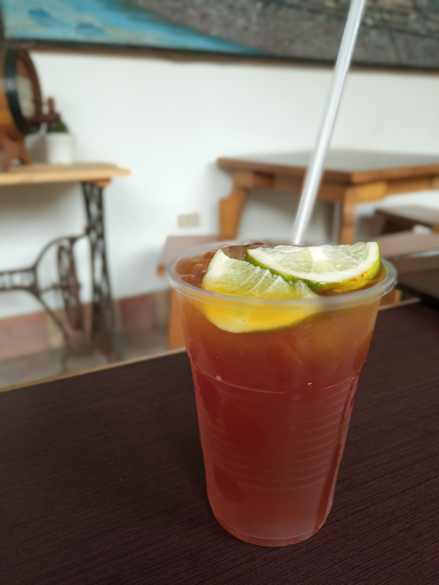

panela water with lemon
Agua de panela con limón (also known as limonada de panela or Papelón con limón) is a refreshing drink popular in South America and other parts of the Americas. It's made by infusing water with panela (raw sugar cane) and then adding lime juice. The resulting beverage is sweet and subtly tangy, often enjoyed as a thirst quencher or a cooling treat.
Price: 10.000